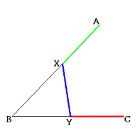

Polya's Problem
Problem
An angle ABC is given.
Construct point X on side AB and point Y on side BC in order that:
AX = XY = YC.

Applet
How to use this applet
Click "next" button from step 0 to step 9.
You can drag Point A for confirming the validity of the construction.